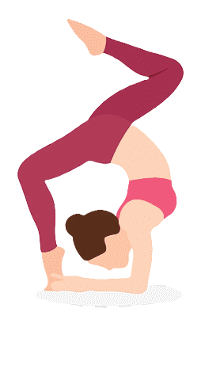

| Nom |
Nom sanskrit |
Type |
Posture |
Bienfaits |
| Pigeon royal |
Eka Pada Rajakapotasana |
Posture au sol |
|
- Ouvre intensément les hanches et le dos
- Étire les cuisses, l’aine, l’abdomen et les épaules
- Stimule les organes internes
- Améliore la posture et la souplesse du dos
|
| Corbeau |
Bakasana |
Equilibre / inversion |
|
- Renforce les bras, poignets et abdos
- Améliore la concentration et l’équilibre
- Développe la confiance en soi
- Tonifie les muscles profonds
|
| Scorpion |
Vrschikasana |
 |
- Renforce tout le corps (bras, dos, jambes)
- Accroît la souplesse de la colonne vertébrale
- Augmente le sens de l’équilibre et la confiance
- Inversion intense qui stimule le système nerveux
|
| Pince debout inversée |
Pincha Mayurasana |
|
- Améliore l’équilibre et la stabilité du tronc
- Renforce les épaules, bras et dos
- Stimule la circulation sanguine
- Calme l’esprit (très utilisée en inversion méditative)
|
| Danseuse |
Natarajasana |
Posture debout |
|
- Développe l’équilibre et la concentration
- Ouvre la poitrine, les épaules et les hanches
- Tonifie les jambes et la colonne vertébrale
- Très bon pour la posture
|